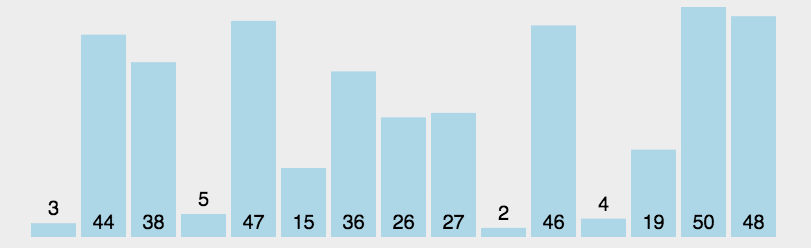

Selection Sort is a simple and intuitive sorting algorithm. No matter what data goes in, it has a time complexity of O(n²). So when using it, the smaller the data scale, the better. The only benefit may be that it does not take up extra memory space.
The basic idea of Selection Sort is to select the smallest (or largest) element from the data to be sorted each time and place it at the end of the sorted sequence, until all data is sorted.
1. Algorithm Steps
Initialization: Divide the list into a sorted part and an unsorted part. Initially, the sorted part is empty, and the unsorted part is the entire list.
Find the minimum value: Find the smallest element in the unsorted part.
Swap positions: Swap the found smallest element with the first element of the unsorted part.
Update range: Move the starting position of the unsorted part back by one position to expand the range of the sorted part.
Repeat steps: Repeat the above steps until the unsorted part is empty and the list is completely sorted.
2. Animation Demo

Suppose there is a list to be sorted, [64, 25, 12, 22, 11]. The process of Selection Sort is as follows:
First round：
Unsorted part:
[64, 25, 12, 22, 11]。Find the minimum value
11, swap it with the first element64.The list becomes
[11, 25, 12, 22, 64]。Sorted part:
[11], unsorted part:[25, 12, 22, 64]。
Second round：
Unsorted part:
[25, 12, 22, 64]。Find the minimum value
12, swap it with the first element25.The list becomes
[11, 12, 25, 22, 64]。Sorted part:
[11, 12], unsorted part:[25, 22, 64]。
Third round：
Unsorted part:
[25, 22, 64]。Find the minimum value
22, swap it with the first element25.The list becomes
[11, 12, 22, 25, 64]。Sorted part:
[11, 12, 22], unsorted part:[25, 64]。
Fourth round：
Unsorted part:
[25, 64]。Find the minimum value
25, it is already in the correct position, no swap needed.The list remains unchanged:
[11, 12, 22, 25, 64]。Sorted part:
[11, 12, 22, 25], unsorted part:[64]。
Fifth round：
Unsorted part:
[64]。There is only one element, no operation needed.
The list is completely sorted:
[11, 12, 22, 25, 64]。
Example
n = len(arr)
for i in range(n):
# Assume the first element of the current unsorted part is the minimum value
min_idx = i
# Find the index of the minimum value in the unsorted part
for j in range(i+1, n):
if arr[j] < arr[min_idx]:
min_idx = j
# Swap the minimum value with the first element of the unsorted part
arr[i], arr[min_idx] = arr[min_idx], arr[i]
return arr
# Example
arr = [64, 25, 12, 22, 11]
sorted_arr = selection_sort(arr)
print(sorted_arr) # Output: [11, 12, 22, 25, 64]
Time Complexity
-
Worst case: O(n²), regardless of whether the input data is sorted or not, n(n-1)/2 comparisons are required.
-
Best case: O(n²), even if the list is already sorted, the same number of comparisons is still required.
-
Average case：O(n²)。
Space Complexity
-
O(1), Selection Sort is an in-place sorting algorithm and does not require additional storage space.
Advantages and Disadvantages
-
Advantages：
-
Simple to implement, code is easy to understand.
-
In-place sorting, no additional storage space required.
-
For small-scale datasets, performance is acceptable.
-
-
Disadvantages：
-
Time complexity is relatively high, not suitable for large-scale datasets.
-
Unstable sorting algorithm (if there are duplicate elements, their relative order may be changed).
-
Applicable Scenarios
-
Scenarios with small data volume and low performance requirements.
-
Scenarios that require a simple implementation.
Code Implementation
JavaScript Code Implementation
Example
var len = arr.length;
var minIndex, temp;
for (var i = 0; i < len - 1; i++) {
minIndex = i;
for (var j = i + 1; j < len; j++) {
if (arr[j] < arr[minIndex]) { // Find the smallest number
minIndex = j; // Save the index of the smallest number
}
}
temp = arr[i];
arr[i] = arr[minIndex];
arr[minIndex] = temp;
}
return arr;
}
Python Code Implementation
Example
for i in range(len(arr) - 1):
# Record the index of the minimum number
minIndex = i
for j in range(i + 1, len(arr)):
if arr[j] < arr[minIndex]:
minIndex = j
# If i is not the minimum number, swap i with the minimum number
if i != minIndex:
arr[i], arr[minIndex] = arr[minIndex], arr[i]
return arr
Go Code Implementation
Example
length := len(arr)
for i := 0; i < length-1; i++ {
min := i
for j := i + 1; j < length; j++ {
if arr[min] > arr[j] {
min = j
}
}
arr[i], arr[min] = arr[min], arr[i]
}
return arr
}
Java Code Implementation
Example
@Override
public int[] sort(int[] sourceArray) throws Exception {
int[] arr = Arrays.copyOf(sourceArray, sourceArray.length);
// A total of N-1 rounds of comparison are needed
for (int i = 0; i < arr.length - 1; i++) {
int min = i;
// The number of comparisons needed per round is N-i
for (int j = i + 1; j < arr.length; j++) {
if (arr[j] < arr[min]) {
// Record the index of the minimum element found so far
min = j;
}
}
// Swap the found minimum value with the value at position i
if (i != min) {
int tmp = arr[i];
arr[i] = arr[min];
arr[min] = tmp;
}
}
return arr;
}
}
PHP Code Implementation
Example
{
$len = count($arr);
for ($i = 0; $i < $len - 1; $i++) {
$minIndex = $i;
for ($j = $i + 1; $j < $len; $j++) {
if ($arr[$j] < $arr[$minIndex]) {
$minIndex = $j;
}
}
$temp = $arr[$i];
$arr[$i] = $arr[$minIndex];
$arr[$minIndex] = $temp;
}
return $arr;
}
C Language
Example
{
int temp = *a;
*a = *b;
*b = temp;
}
void selection_sort(int arr[], int len)
{
int i,j;
for (i = 0 ; i < len - 1 ; i++)
{
int min = i;
for (j = i + 1; j < len; j++) // Traverse the unsorted elements
if (arr[j] < arr[min]) // Find the current minimum value
min = j; // Record the minimum value
swap(&arr[min], &arr[i]); // Perform the swap
}
}
C++
Example
void selection_sort(std::vector<T>& arr) {
for (int i = 0; i < arr.size() - 1; i++) {
int min = i;
for (int j = i + 1; j < arr.size(); j++)
if (arr[j] < arr[min])
min = j;
std::swap(arr[i], arr[min]);
}
}
C#
Example
int i, j, min, len = arr.Length;
T temp;
for (i = 0; i < len - 1; i++) {
min = i;
for (j = i + 1; j < len; j++)
if (arr[min].CompareTo(arr[j]) > 0)
min = j;
temp = arr[min];
arr[min] = arr[i];
arr[i] = temp;
}
}
Swift
Example
/// Selection Sort
///
/// - Parameter list: The array to be sorted
func selectionSort(_ list: inout [Int]) -> Void {
for j in 0..<list.count - 1 {
var minIndex = j
for i in j..<list.count {
if list[minIndex] > list[i] {
minIndex = i
}
}
list.swapAt(j, minIndex)
}
}
Original URL: https://github.com/hustcc/JS-Sorting-Algorithm/blob/master/2.selectionSort.md
Reference URL: https://zh.wikipedia.org/wiki/%E9%80%89%E6%8B%A9%E6%8E%92%E5%BA%8F
SNK2345
239***2161@qq.com
Kotlin Implementation
class SelectionSort { /** * 拓展IntArray为他提供数据两个数交换位置的方法 * @param i 第一个数的下标 * @param j 第二个数的下标 */ fun IntArray.swap(i:Int,j:Int){ var temp=this[i] this[i]=this[j] this[j]=temp } fun selectionSort(array: IntArray):IntArray{ for (i in array.indices){ //假设最小值是i var min=i var j=i+1 while (j in array.indices){ if (array[j]<array[min]){ min=j } j++ } if (i!=min){ array.swap(i,min) } } return array; } }SNK2345
239***2161@qq.com
kezhuoquan
kez***quan@163.com
Rust version implementation:
fn selection_sort<T:Ord + Debug>(array: &mut [T]) { for i in 0..array.len() { let mut temp = i; for j in i..array.len() { if array[j] < array[temp] { temp = j; } } array.swap(i, temp); } }kezhuoquan
kez***quan@163.com